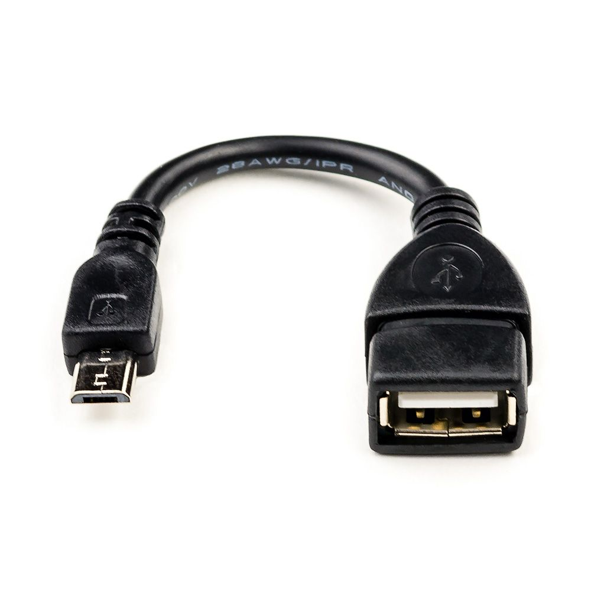

Для этого вам понадобится On-The-Go-кабель (OTG), котрый с лёгкостью можно найти в интернете или купить практически в любом магазине электроники. При его покупке обратите внимание на то, чтобы его разъём (расположенный слева на картинке) подходил к разъёму вашего устройства.
После его покупки (конечно же, вернувшись домой 😉) можно приступать к подключению. Одним концом подключите OTG-кабель к клавиатуре, другим – к вашему устройству.
Теперь можно зайти в игру, в которую можно играть с мобильного устройства только с аппаратной клавиатурой, например, Line Race. После того, как на экране появится предупреждение о необходимости подключения клавиатуры, нажмите клавишу R, и вы войдёте в игру.